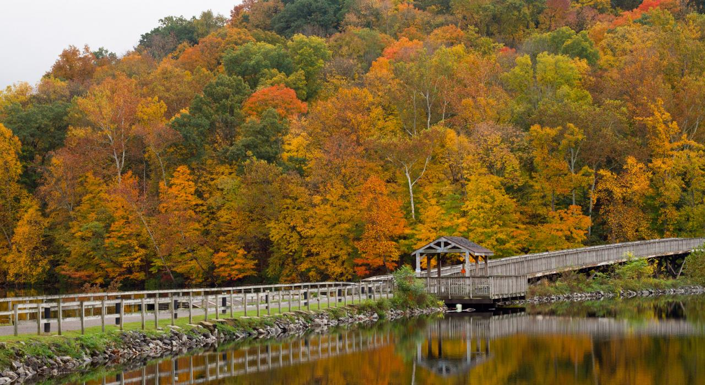
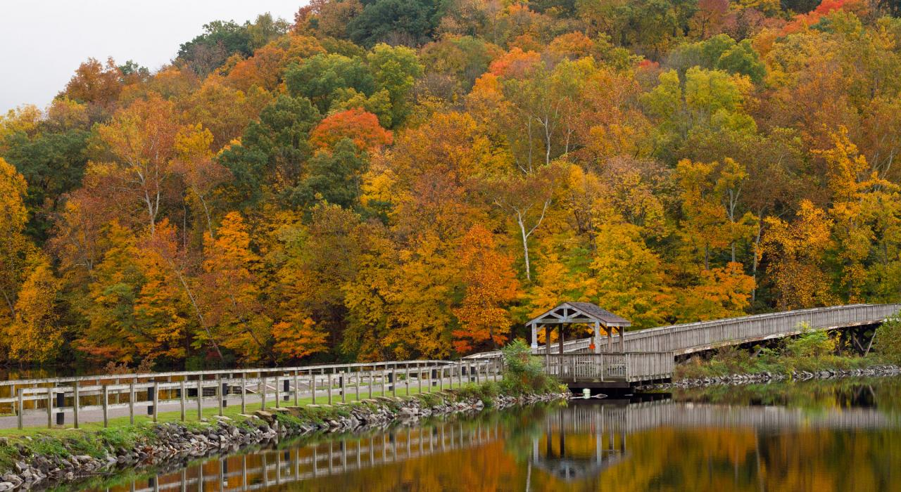
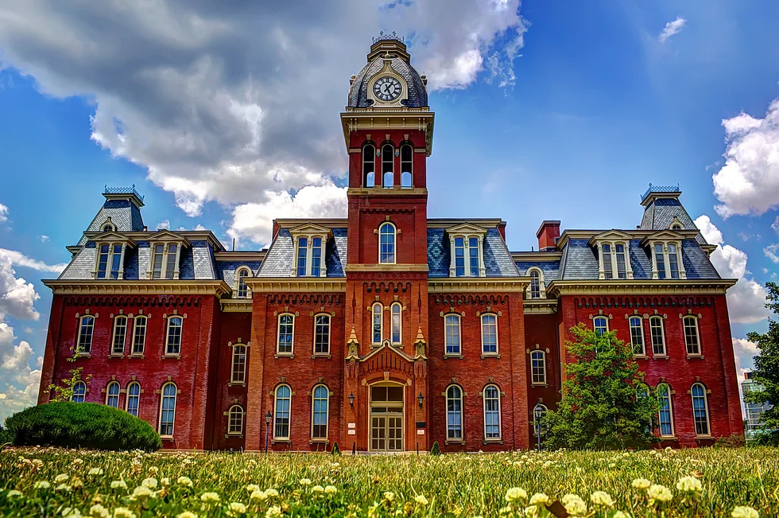
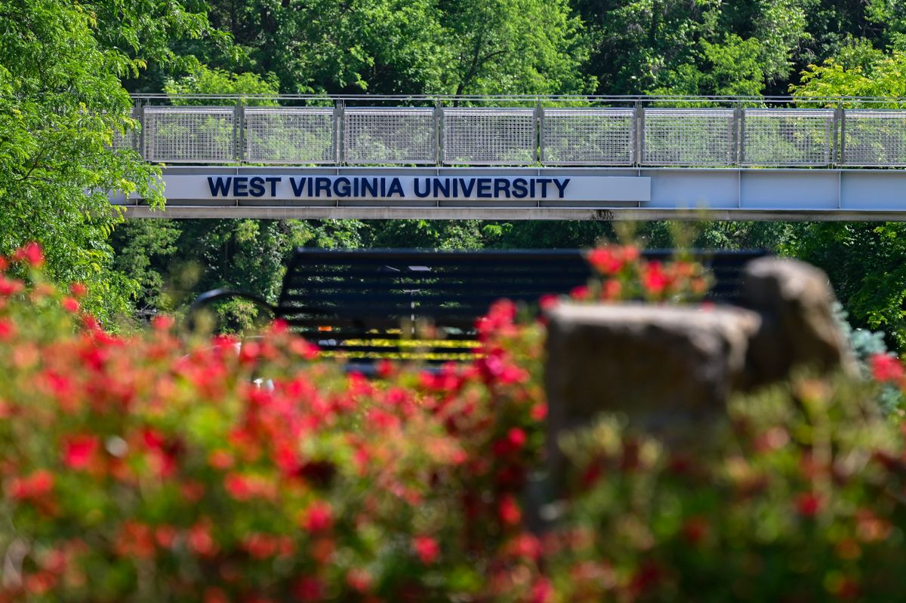
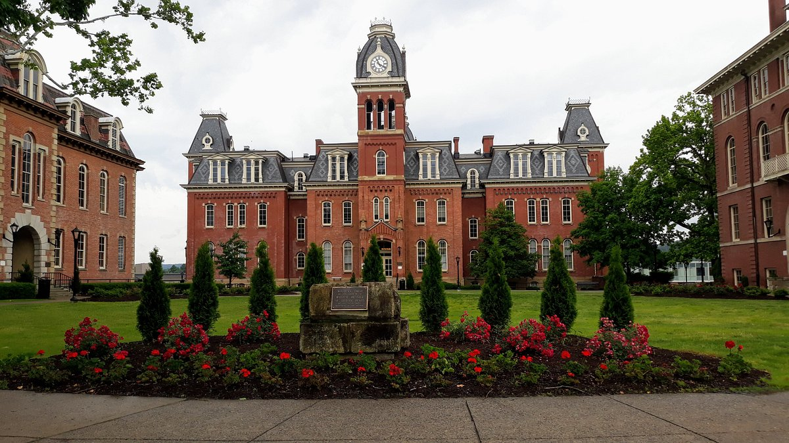
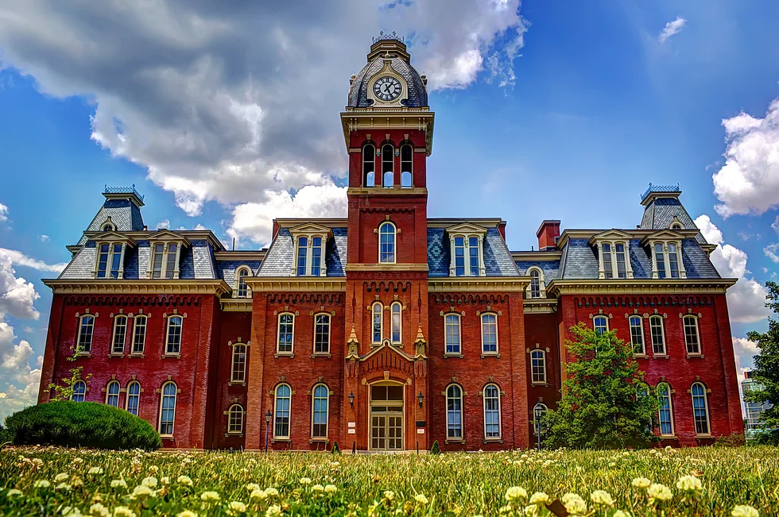
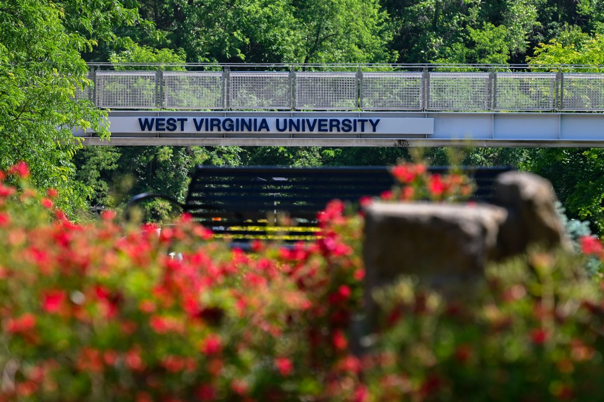
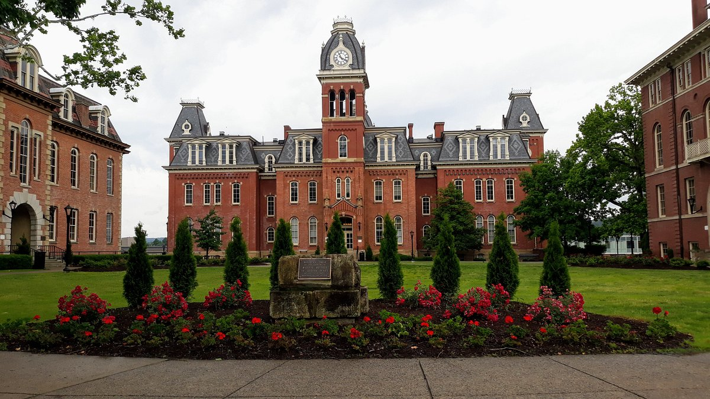

City Demographics
| Statistic | Value |
|---|---|
| Population | Approximately 30,509 |
| Racial/Ethnic Breakdown | 85.7% White, 3.8% Black or African American, 3.9% Asian, 3.8% Hispanic or Latino |
| Median Age | 24.2 years (Due to West Virginia University presence) |
| Graduate Degrees | 33.16% of residents hold graduate degrees |
| Bachelor's Degree or Higher | 24.92% of residents hold a bachelor's degree or higher |
| U.S. Citizenship | 97.4% of Morgantown residents are U.S. citizens |
Source: Data USA, n.d.
Economic Information
| Statistic | Value |
|---|---|
| Median Household Income | $41,103 |
| Per Capita Income | $28,620 |
| Poverty Rate | 34.4% |
| Major Employment Sectors | Education (27.2%), Healthcare (15.2%), Accommodation and Food Services (12.1%) |
| Influence of West Virginia University | Major employer and economic driver |
| Unemployment Rate (March 2022) | 5.3% |
| Cost of Living Index | 74.8 (Compared to U.S. average of 100) |
Source: World Population Review, n.d.
Geographic Features
 

Sources: West Virginia State Parks, Squarespace, Visit the USA, Visit the USA
Morgantown is located along the Monongahela River and is known for its hilly terrain. The city covers an area of about 10.62 square miles and has a population density of 3,037 people per square mile, making it one of the most densely populated areas in West Virginia. The surrounding geography includes rolling hills and lush forests, contributing to the scenic beauty of the region.
As noted in the Wikipedia entry, Morgantown is situated in the Appalachian region and features notable waterways such as the Monongahela River, Deckers Creek, and Cheat Lake.
Key Attractions
 





Sources: Wallpapercave, Wallpapercave, Wallpapercave, The Odyssey Online, WVU Today, Tripadvisor
Morgantown offers several key attractions such as the West Virginia University campus, which includes the Mountaineer Field at Milan Puskar Stadium and the WVU Coliseum. Outdoor enthusiasts can enjoy the nearby Coopers Rock State Forest, which offers hiking, rock climbing, and scenic overlooks. The Core Arboretum and the Monongahela River are also popular spots for recreation and relaxation.
According to Encyclopedia Britannica, Morgantown's attractions include the historic Pricketts Fort State Park in nearby Fairmont and various opportunities for outdoor recreation along the Monongahela River.